Manual da marca
Comida de verdade é direito de todo mundo.
Sumário
Por que a Fibra existe
1
O problema que a marca enfrenta, o que a empresa faz e como o dinheiro circula.
dos domicílios brasileiros conviveram com algum grau de insegurança alimentar em 2024.
Cada grão é um domicílio em cada cem. Em cor, os 24,2 com insegurança alimentar leve, moderada ou grave. Fonte: IBGE, PNAD Contínua, Segurança Alimentar 2024.
Num país que planta comida para o mundo, arroz, feijão e verdura ainda pesam no orçamento de milhões de famílias. A distância entre quem planta e quem come encarece a comida nos dois lados: o produtor vende barato para o atravessador, a família paga caro no mercado.
A Fibra encurta essa distância. Compra direto da agricultura familiar, monta cestas de comida de verdade e usa a assinatura de quem pode pagar para baratear a cesta de quem precisa.
Uma rede de cestas com três planos. Quem pode, assina. Quem precisa, paga menos.
Conta da rede: a cada três cestas do Fibra em Casa, uma família do CadÚnico recebe a mesma cesta por R$ 39. Os contratos do Fibra Empresa completam a diferença, e as contas são publicadas todo trimestre.
Estratégia
2
Propósito, posicionamento, públicos, personalidade e voz.
Comida de verdade, com preço de feira, chegando a todo mundo.
Propósito
Fazer da comida de verdade um direito praticado, não só escrito.
Posicionamento
A cesta de comida de verdade com preço de feira, que faz a colheita do produtor brasileiro chegar a todo mundo.
Públicos
Famílias das periferias urbanas (classes C, D e E).
Áreas de RH e benefícios de empresas.
Produtores da agricultura familiar.
Para a família: arroz, feijão, legumes e verduras toda semana, sem taxa de entrega e sem surpresa no preço.
Para a empresa: um benefício que alimenta a equipe e financia cestas para quem precisa, com relatório trimestral.
Para o produtor: preço combinado antes da colheita e compra direta, sem atravessador.
Personalidade: a vizinha que sabe o preço de tudo e divide a receita.
Arquétipos
Cuidador + Pessoa comum
| A Fibra é | e não é | A Fibra é | e não é |
|---|---|---|---|
| Direta | Seca | Popular | Popularesca |
| Calorosa | Melosa | Orgulhosa da comida brasileira | Ufanista |
| Transparente com números | Técnica | Solidária | Assistencialista |
Tom de voz: fala de feira. Frase curta, número claro, nada de letra miúda.
| A Fibra diz | A Fibra não diz |
|---|---|
| Arroz, feijão e verdura pra semana toda. | Soluções alimentares sustentáveis. |
| Quem precisa paga menos. | Ajudamos os carentes. |
| R$ 39 por semana, sem taxa de entrega. | Condições especiais, consulte. |
| Direto de quem planta. | Cadeia de suprimentos otimizada. |
| Chegou couve fresquinha. | Novidades exclusivas para você! |
Regras de escrita
1. Preço sempre com R$ e espaço: R$ 39.
2. Número antes de adjetivo.
3. Verbo no presente.
4. Pessoas são famílias, produtores e vizinhos. Nunca "carentes" ou "beneficiários".
5. Português do Brasil falado: "pra", "tá", "fresquinha", na medida.
Conceito: Letra grande
3
Na feira, o que importa vem escrito grande: o nome, o preço, a procedência. A Fibra fala do mesmo jeito.
Quatro princípios saem do conceito e viram regra de sistema.
1
Letra grande
Títulos em Gabarito Black, compostos em bloco como os cartazes de gráfica popular: cada linha ajustada à largura.
2
Gente de verdade
Fotografia do cotidiano brasileiro: roça, feira, cozinha, mesa. Luz natural, gente fazendo.
3
Comida no centro
O grão de feijão ocupa as contraformas do logotipo. Objetos reais da cozinha e da feira entram recortados, com borda de papel.
4
Feito como na rua
Plaquinha com prendedor, carimbo, sacaria, lambe-lambe e papel. Processos que existem e que dá para produzir.
Referências brasileiras: a cultura gráfica que o público já lê todo dia.
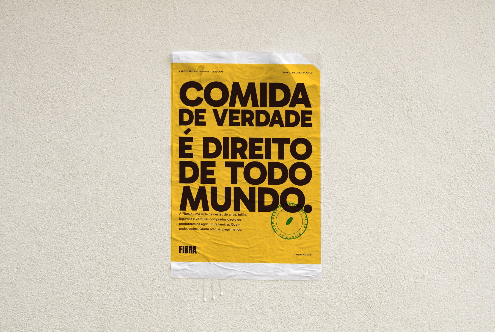
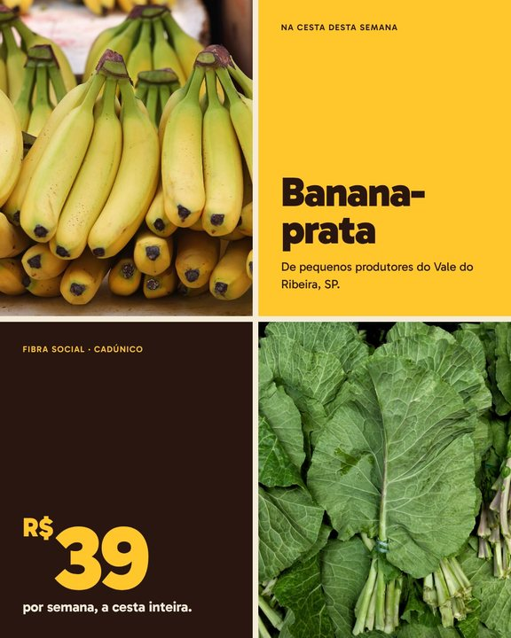
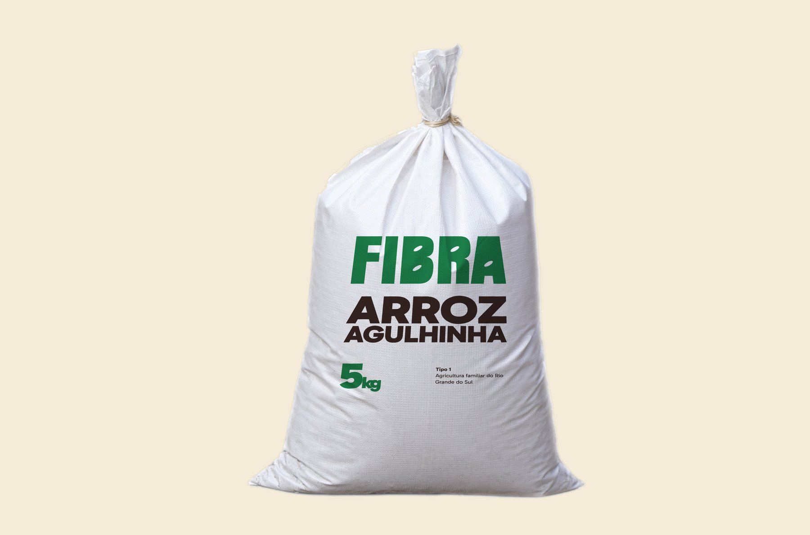
Cartaz lambe-lambe de gráfica popular · plaquinha de preço da feira livre · sacaria carimbada dos mercados municipais · letreiramento dos abridores de letras · a disciplina de grade de Aloísio Magalhães e Alexandre Wollner.
Lambe-lambe
Plaquinha de feira
Sacaria
Logotipo
4
Desenho próprio: letras condensadas na tradição dos tipos de madeira dos cartazes, com o grão de feijão no lugar das contraformas.
Assinatura principal
Cinco letras altas e firmes, desenhadas a partir de tipos condensados de madeira. As contraformas de B, R e A dão lugar a grãos inclinados: a comida ocupa o centro da marca, como ocupa o centro da mesa.
O logotipo não é digitado. Use sempre os arquivos de marca/logo.
Construção
Medidas (unidades do desenho)
Altura das maiúsculas: 1000.
Grão: elipse de 164 × 70 (proporção 2,34 : 1), inclinada a −42°.
Entreletra: 6; par RA: −30.
Largura do logotipo: 2336 (2,34 × a altura).
Grão do A: centro a 590 da linha de topo.
Versões
Horizontal · principal
Empilhada · espaços verticais
Símbolo BRA · avatar e selo
Cores do logotipo
Área de proteção e redução mínima
A área de proteção mede ¼ da altura das maiúsculas em todos os lados. Nenhum texto, foto ou borda entra nela.
Horizontal
25 mm · 96 px
Empilhada
15 mm · 60 px
Símbolo
15 mm · 60 px
Usos incorretos
Cor
5
Verde, amarelo e azul na frente; terra e cozinha no apoio; feijão como tinta e arroz como papel.
Combinações aprovadas e contraste medido
Razão de contraste WCAG 2.2. Texto corrido exige 4,5 : 1; títulos grandes, 3 : 1. Combinações abaixo de 3 : 1 não levam texto.
Proporção: arroz e feijão no dia a dia, cor nacional na manchete
Arroz 28 · Couve 20 · Fubá 20 · Feijão 16 · Anil 12 · Dendê 2 · Urucum 2 (% da área somada das peças)
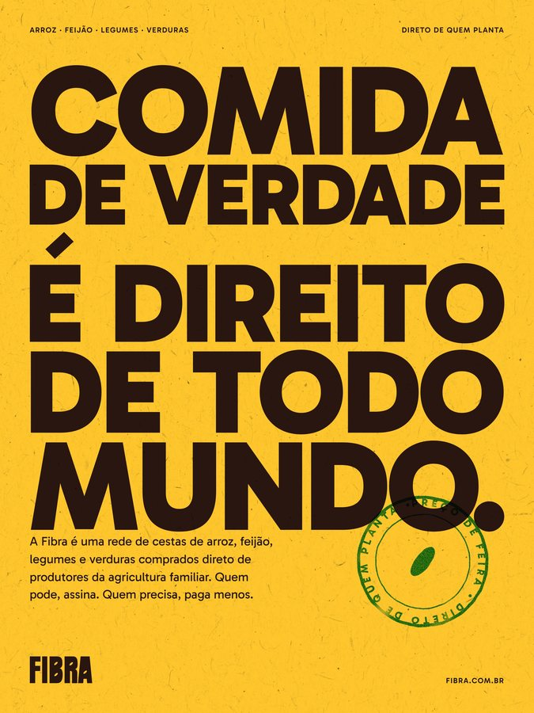
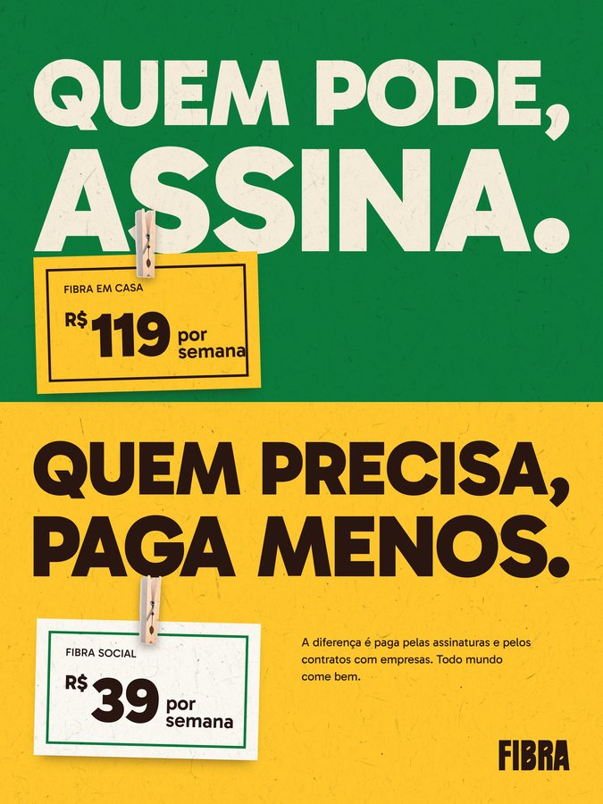
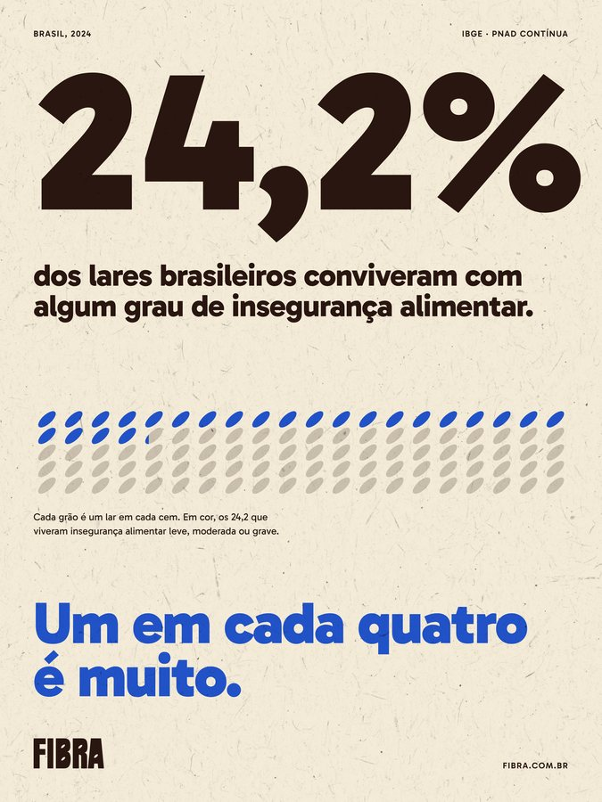
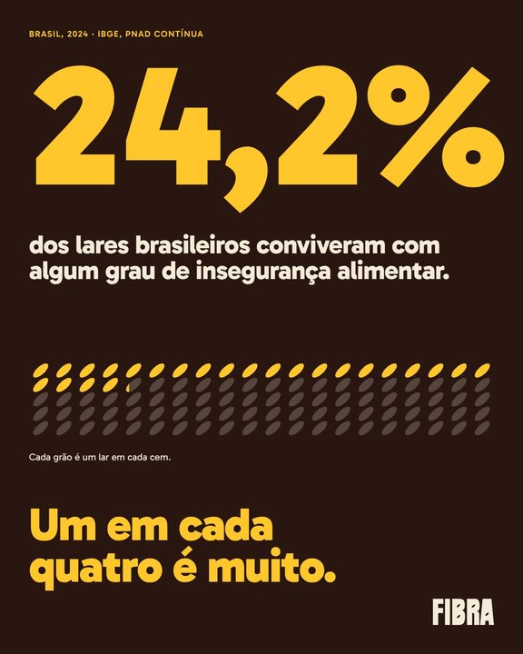
Verde, amarelo e azul na frente, como na bandeira; feijão com fubá é a dupla de assinatura. Cada peça tem uma cor dominante e no máximo duas de apoio. Dendê e urucum ficam no apoio: receitas, embalagem e detalhe.
Tipografia: Gabarito
6
Uma família só, desenhada no Rio de Janeiro pela Naipe Foundry, do texto miúdo ao cartaz de rua.
Aa
Gabarito
Sans-serif geométrica com traço amigável, da Naipe Foundry (Álvaro Franca e Felipe Casaprima), com Leandro Assis e revisão de Henrique Beier (Harbor Type). Variável de 400 a 900, licença SIL OFL, cobertura completa do português.
ABCDEFGHIJKLMNOPQRSTUVWXYZ
abcdefghijklmnopqrstuvwxyz
àáâãçéêíóôõú 0123456789 R$ %
Hierarquia
| Nível | Peso · entrelinha · espaço | Exemplo |
|---|---|---|
| Bloco | Black 900 · 1,0 · −1,2% | Sem letra miúda |
| Display | Black 900 · 0,9 · −2,5% | F de feijão. |
| Título | Extra 800 · 0,98 · −1,8% | Comida de verdade é direito de todo mundo. |
| Chamada | Bold 700 · 1,12 · −1% | A gente compra direto de quem planta. |
| Texto | Regular 400 · 1,42 · 0 | Arroz, feijão, legumes, verduras e fruta da estação, na sua porta, sem taxa de entrega. |
| Rótulo | Semi 600 · caixa-alta · +8,5% | Cesta da semana · Fibra em Casa |
Composição em bloco
Herança dos cartazes de gráfica popular: cada linha é ajustada à largura do bloco, medida na tinta das letras. Palavras curtas ficam enormes, palavras longas ficam menores, e o texto vira imagem.
Regras: caixa-alta, Black 900, entrelinha fixa entre linhas, acentos com espaço próprio, alinhamento óptico à esquerda. No máximo seis linhas e 18 caracteres por linha.
Elementos gráficos
7
Plaquinha, recorte, carimbo, grão e letras-janela: o kit de feira da marca.
Plaquinha
O cartão de preço da feira, preso por prendedor de madeira fotografado. Leva informação de preço, plano ou procedência.
| Rótulo | Semi 600, caixa-alta, 26% do corpo |
| Preço | Black 900, 150% do corpo, R$ a 32% |
| Fio interno | 7% do corpo, recuado 28%; couve no papel, feijão no fubá |
| Rotação | de −3° a +3°, nunca mais |
| Prendedor | centralizado, inclinação de até 4° |
Recortes
Objetos reais fotografados em fundo branco, recortados com borda de papel e sombra curta. Usados em colagem, sem distorcer, sem recolorir.
Carimbo, grão e gráfico de grãos
Carimbo: selo de tinta irregular para "Direto de quem planta", "Preço justo" e "Agricultura familiar". Uma vez por peça.
Grão: marcador de lista, selo e unidade de contagem. Sempre a −42°.
Gráfico de grãos: cada grão é uma unidade. Cor só para o dado; o resto em feijão a 20%.
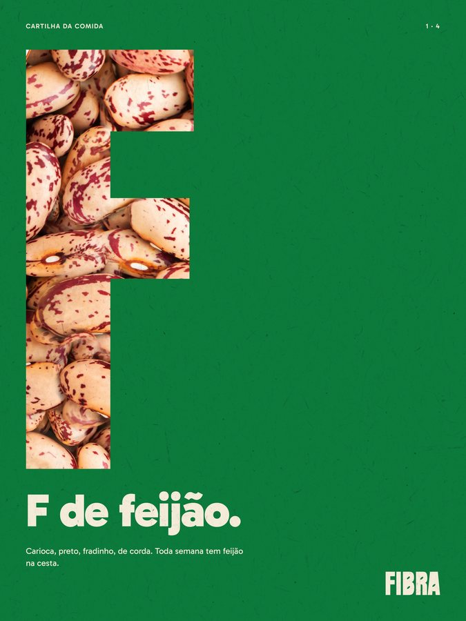
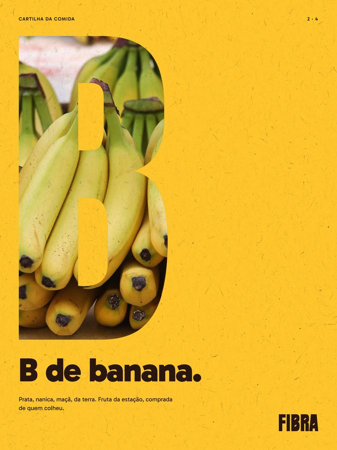
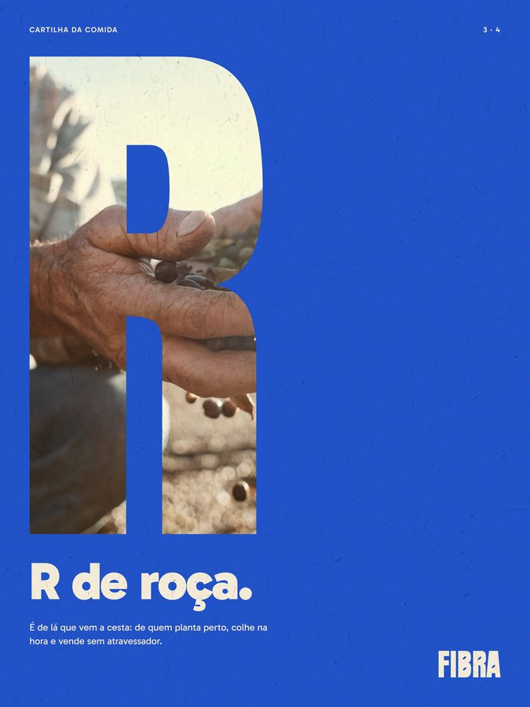
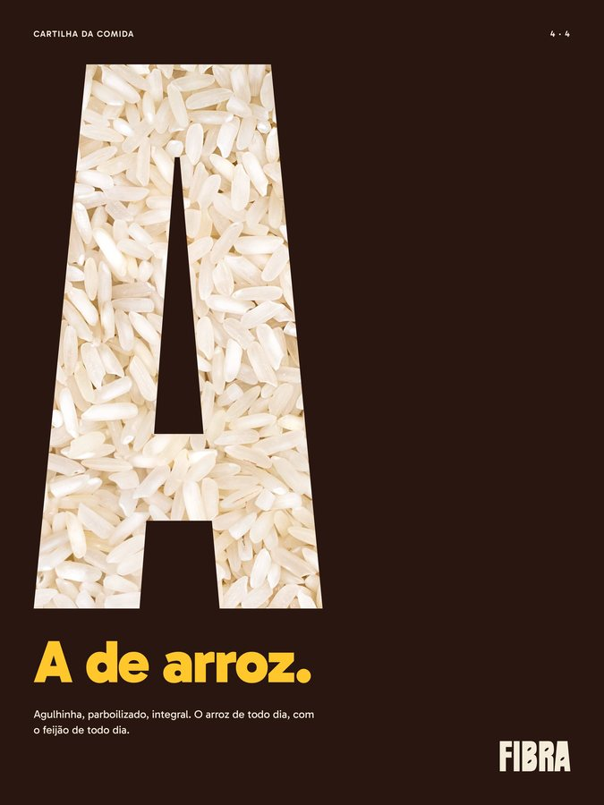
Letras-janela: a Cartilha da comida
Fotografia dentro das letras do logotipo, uma letra por peça, como nas cartilhas de alfabetização: F de feijão, B de banana, R de roça, A de arroz. Com foto dentro, a letra perde o grão e a contraforma fica aberta. Dentro da letra só entra comida, mão ou paisagem, nunca rosto.
Fotografia: cotidiano, não cenário
Gente fazendo. Plantar, escolher, cozinhar, servir. Nada de olhar parado para a câmera segurando produto.
Luz natural. Janela, quintal, sol de feira. Cor real, sem filtro.
Brasil de verdade. Cozinhas, roças e feiras daqui; gente de todas as cores e idades.
Rosto livre. Nada se sobrepõe a um rosto e nenhuma moldura corta rosto. Fome não é cenário: nunca prato vazio nem rosto triste para vender.
Construção fotográfica: três jeitos de montar a foto
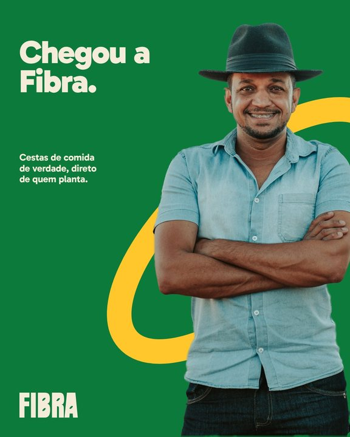
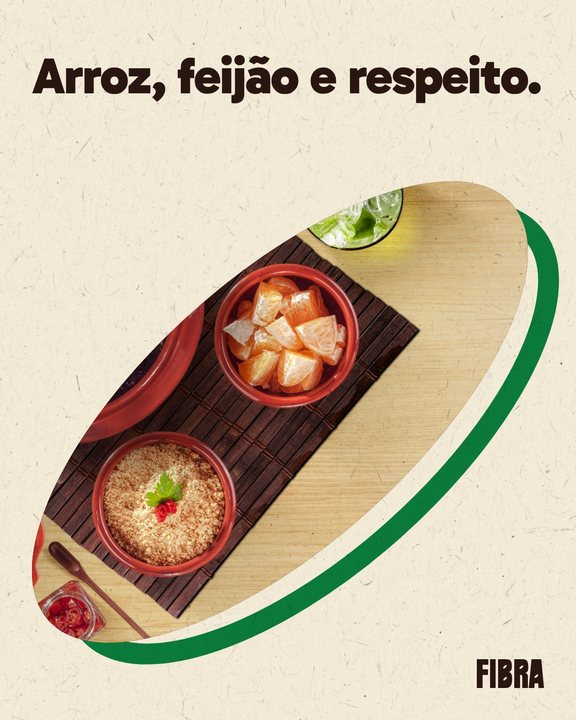
1. Retrato com anel. Pessoa recortada à frente do grão em anel; o retrato encosta na borda de baixo e o texto fica sobre cor chapada.
2. Mosaico. Módulos de foto e de cor na grade, com calha de 12 px: um módulo diz, o outro mostra.
3. Foto no grão. Comida dentro da forma do grão, com o anel deslocado atrás, como uma sombra de cor.
Referência
A comunicação do Governo Federal para a agricultura familiar (manual do Programa de Aquisição de Alimentos, MDS, 2023) mostra o caminho: forma da marca em camada com a pessoa, módulos de foto e cor, e fotografia de gente real em luz natural.
A Fibra usa a mesma lógica com o seu próprio grão, sem copiar formas, cores ou selos do governo.
Grade
Aplicações
10
Cartazes, Instagram, embalagens, a marca nas cenas reais e o filme manifesto.
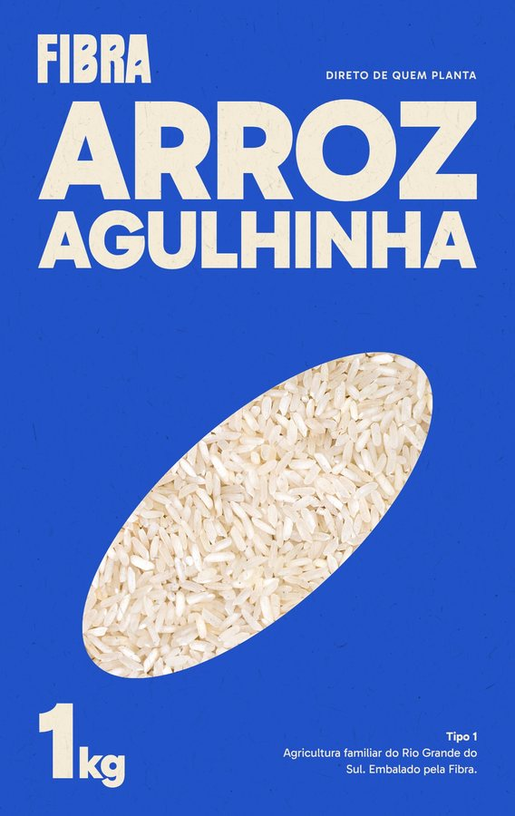
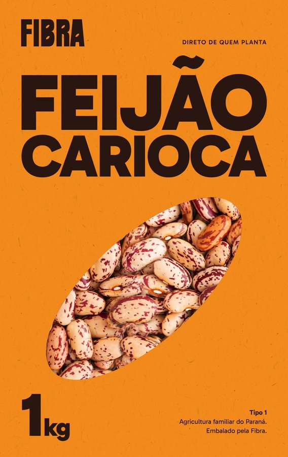
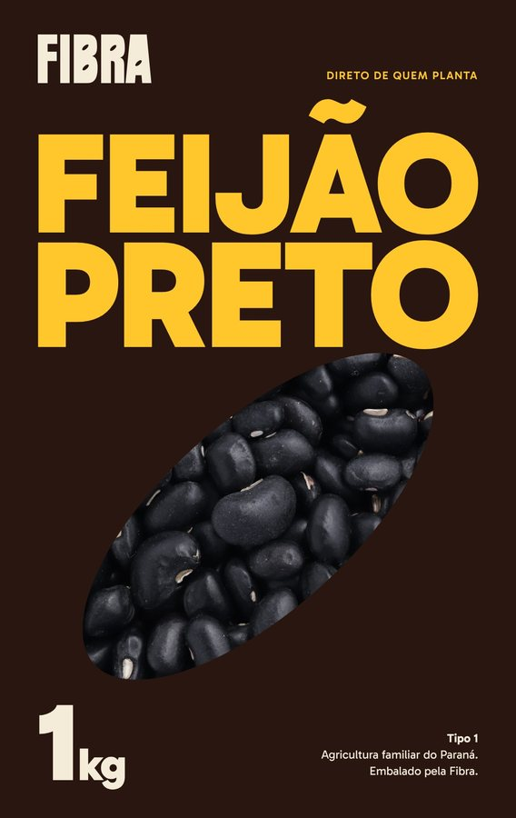
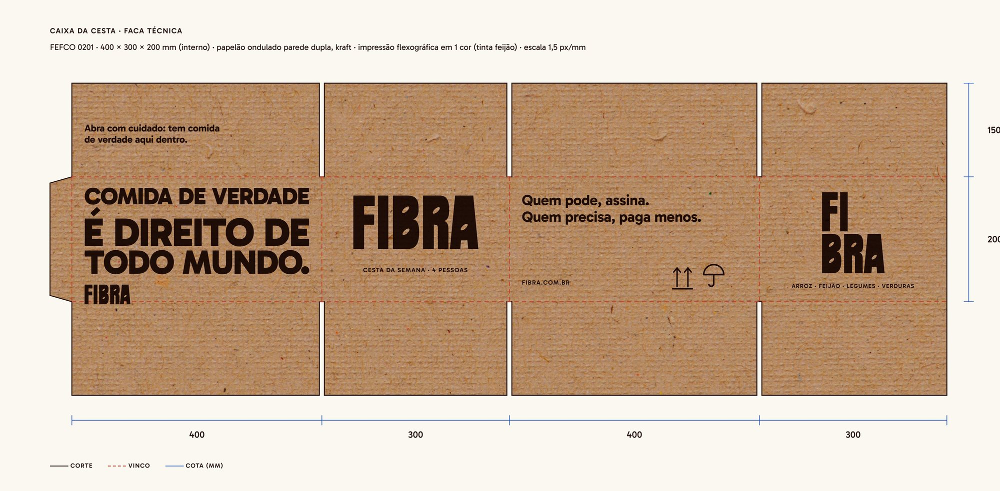
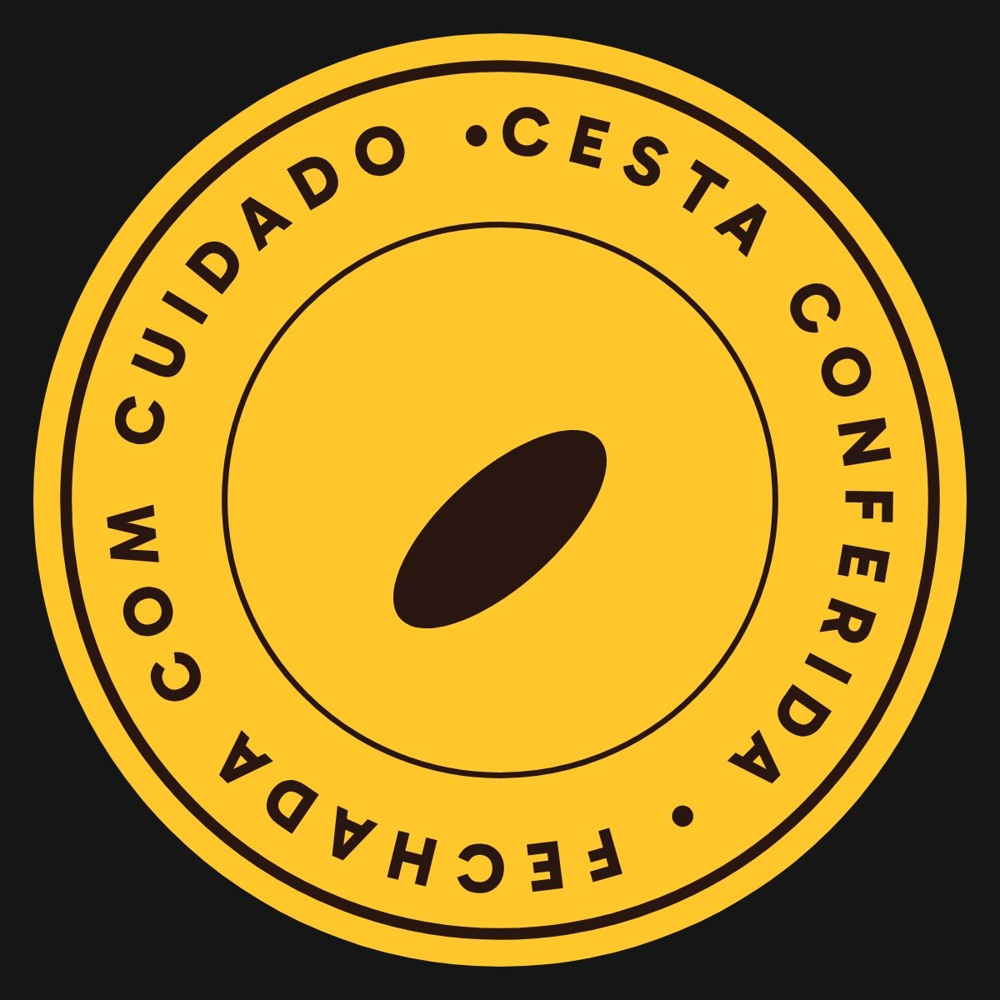
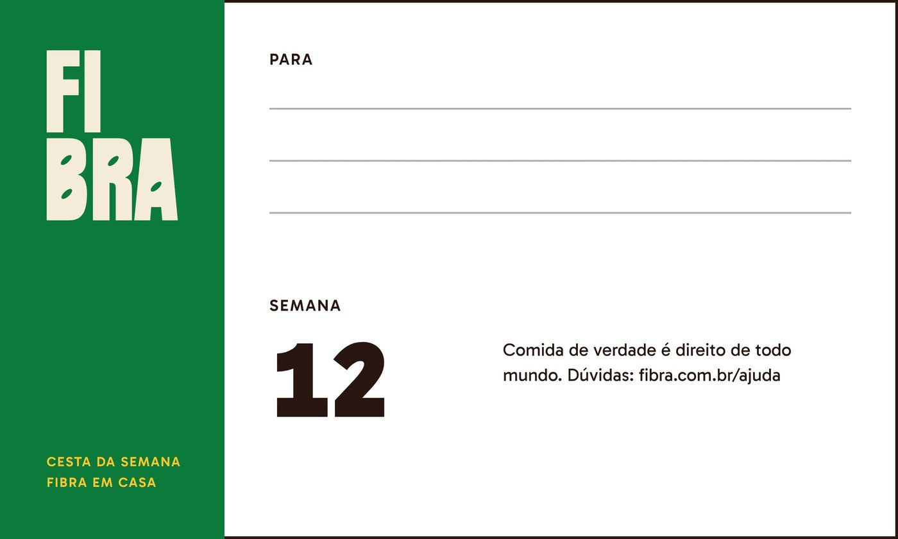
Pacotes de 1 kg com janela em forma de grão: o produto aparece pelo próprio símbolo da marca. Uma cor de fundo por produto. Caixa da cesta em papelão kraft, impressão flexográfica em uma cor.
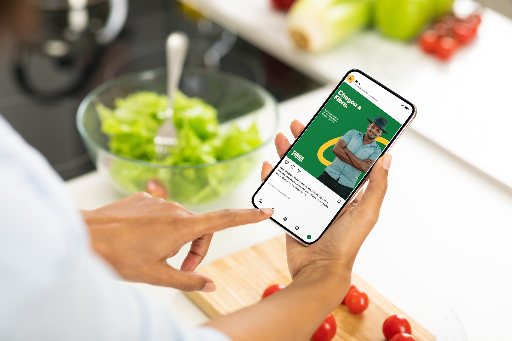
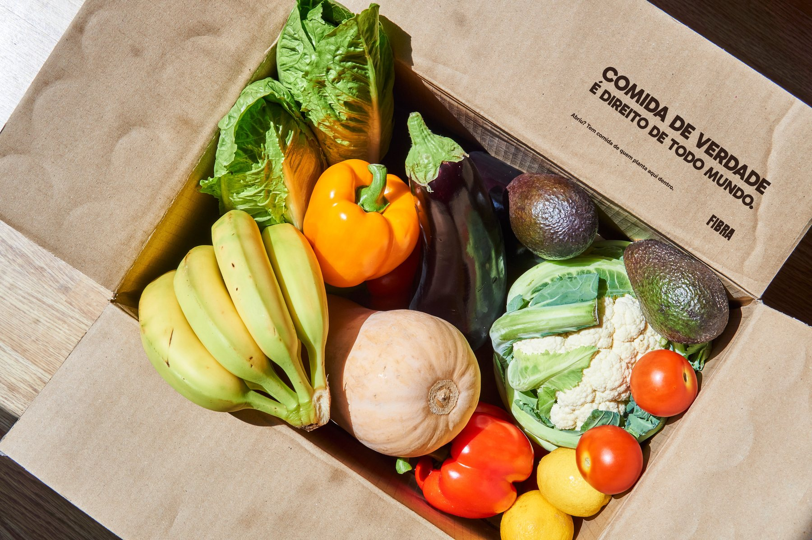
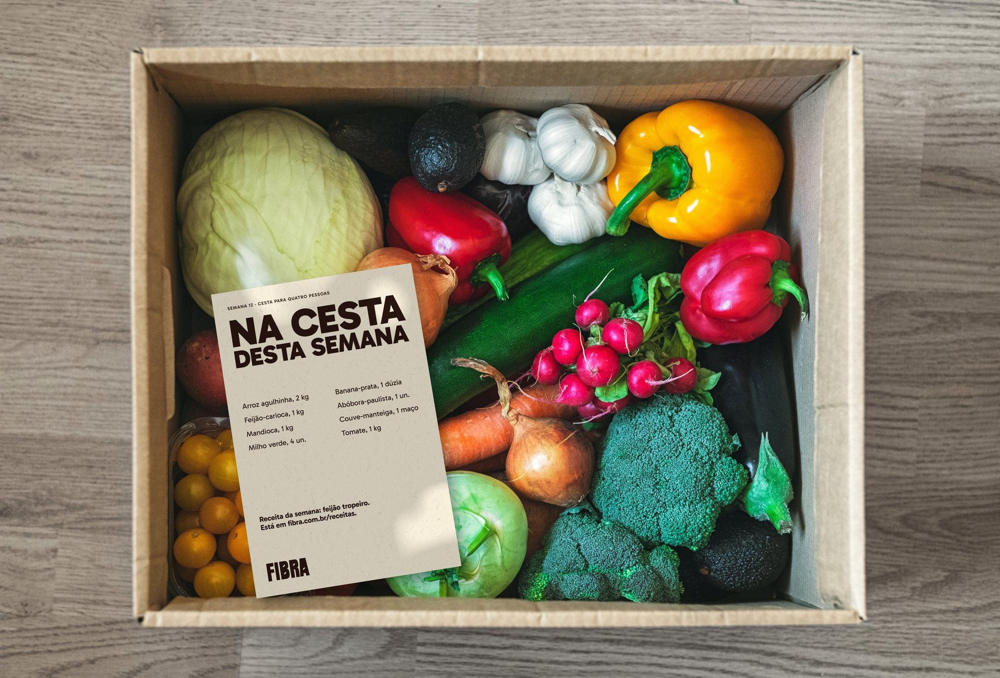
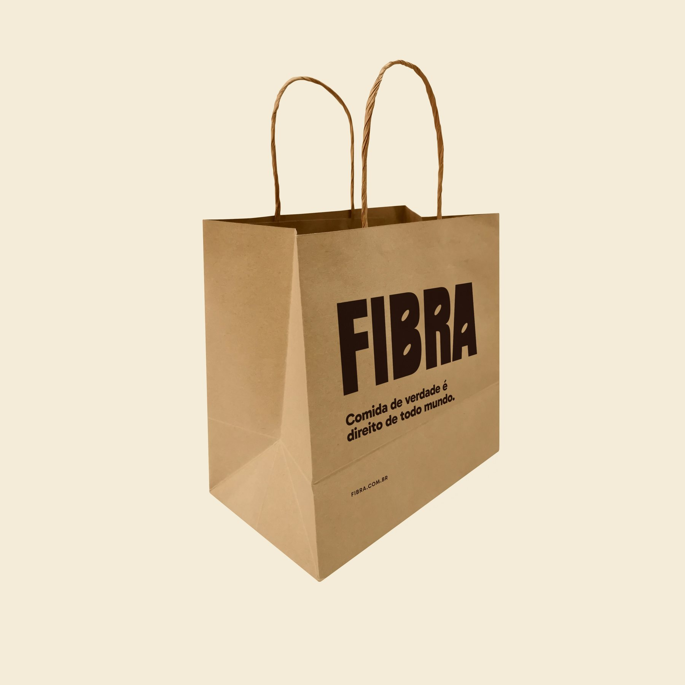
Filme de 45 segundos em 16:9 e 9:16, cortado nos compassos da trilha a partir de 1:56: o dado no silêncio, a resposta na primeira batida, a feira no groove, o mecanismo, o campo dentro das letras na quebra sem grave e a assinatura no pico.
Comida de verdade é direito de todo mundo.
Créditos
Marca fictícia, projeto autoral de identidade visual.
Tipografia: Gabarito, Naipe Foundry (Rio de Janeiro), SIL OFL. Logotipo: desenho próprio a partir de tipos condensados (base Anton, SIL OFL).
Fotografia: Adobe Stock, licença padrão. Dado: IBGE, PNAD Contínua, Segurança Alimentar 2024.
Trilha do filme: faixa fornecida pelo autor, trecho a partir de 1:56.